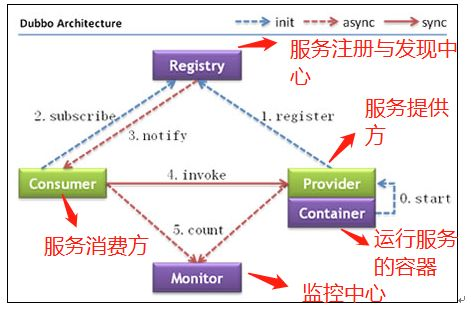
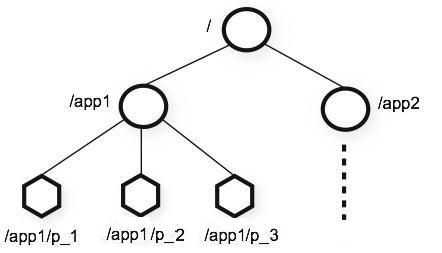
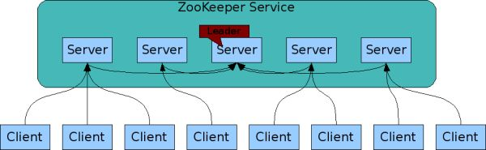
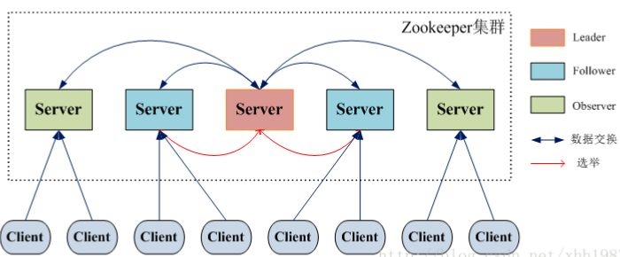

Zookeeper 入门
Table of Contents
简介
Zookeeper最早起源于雅虎研究院的一个研究小组 在当时，研究人员发现，在雅虎内部很多大型系统基本都需要依赖一个类似的系统来进行分布式协调，但是这些系统往往都存在分布式单点问题 所以，雅虎的开发人员就试图开发一个通用的无单点问题的分布式协调框架，以便让开发人员将精力集中在处理业务逻辑上
概览
ZooKeeper 是一个开源的 分布式协调服务 ：
- ZooKeeper框架最初是在 Yahoo 上构建的，用于以简单而稳健的方式访问他们的应用程序
- 后来，Apache ZooKeeper成为 Hadoop ， HBase 和其他分布式框架使用的有组织服务的标准
- 例如: Apache HBase使用ZooKeeper跟踪分布式数据的状态
ZooKeeper 的设计目标是将那些 复杂且容易出错 的 分布式一致性服务 封装起来，构成一个 高效可靠 的 原语集 ，并以一系列简单易用的接口提供给用户使用
原语：操作系统或计算机网络用语范畴。是由若干条指令组成的，用于完成一定功能的一个过程。具有不可分割性 即原语的执行必须是连续的，在执行过程中不允许被中断
场景
ZooKeeper 是一个典型的分布式数据一致性解决方案，分布式应用程序可以基于 ZooKeeper 实现诸如： 数据发布/订阅 负载均衡 命名服务 分布式协调/通知、集群管理 Master 选举 分布式锁 分布式队列
一个最常用的使用场景就是用于担任 服务生产者和服务消费者的注册中心 ：
- 服务生产者： 将 自己提供的服务 注册 到 Zookeeper中心
服务消费者：在进行服务调用的时候先到 Zookeeper 中 查找服务 ，获取到服务生产者的详细信息之后，再去调用服务生产者的内容与数据

同样在搭建 solr 集群的时候，也可以使用 ZooKeeper 作为 solr 集群的管理工具，主要提供下面几个功能： 1. 集群管理：容错、负载均衡 2. 配置文件的集中管理 3. 集群的入口
集群
Zookeeper中 Leader 选举算法 采用了 Zab 协议。Zab核心思想是 当多数 Server 写成功，则任务数据写成功
- 如果有 3 个Server，则 最多允许1个 Server 挂掉
- 如果有 4 个Server，则同样 最多允许1个 Server 挂掉
既然3个或者4个Server，同样最多允许1个Server挂掉，那么它们的可靠性是一样的 所以选择奇数个ZooKeeper Server即可，这里选择3个Server
概念
会话
Session 指的是 ZooKeeper 服务器与客户端会话 。在 ZooKeeper 中，一个客户端连接是指 客户端 和 服务器 之间的一个 TCP 长连接 ：
- 客户端启动的时候，首先会与服务器建立一个 TCP 连接，从第一次连接建立开始，客户端会话的生命周期也开始了。通过这个连接
- 客户端能够通过 心跳检测 与服务器保持有效的会话
- 也能够向 Zookeeper服务器 发送请求 并 接受响应
- 还能够通过该连接 接收 来自服务器的 Watch事件通知
- Session的 sessionTimeout 值用来设置一个 客户端会话的超时时间
- 当由于 服务器压力太大 、 网络故障 或是 客户端主动断开连接 等各种原因导致客户端连接断开时，只要 在 sessionTimeout规定的时间 内能够 重新连接 上集群中 任意一台 服务器 ，那么 之前创建的会话仍然有效
在为客户端创建会话之前，服务端首先会为每个客户端都分配一个sessionID 由于 sessionID 是 Zookeeper 会话的一个重要标识，许多与会话相关的运行机制都是基于这个 sessionID 的 因此，无论是哪台服务器为客户端分配的 sessionID，都务必保证全局唯一！
数据节点
在Zookeeper中， 节点 分为两类：
- 指构成集群的机器，称之为 机器节点
- 数据模型中的数据单元 ，称之为 数据节点 ZNode
Zookeeper将所有数据存储在内存中 数据模型是一棵树，由斜杠（/）的进行分割的路径，就是一个Znode，例如/foo/path1 每个上都会保存自己的数据内容，同时还会保存一系列属性信息
在Zookeeper中，znode可以分为 持久节点 和 临时节点 两类：
- 持久节点：是指一旦这个ZNode被创建了，除非主动进行ZNode的移除操作，否则这个ZNode将一直保存在Zookeeper上
- 临时节点：它的生命周期和客户端会话绑定，一旦客户端会话失效，那么这个客户端创建的所有临时节点都会被移除
ZooKeeper还允许用户为每个节点添加一个特殊的属性：SEQUENTIAL 一旦节点被标记上这个属性，那么在这个节点被创建的时候，Zookeeper会自动在其节点名后面追加上一个整型数字，这个整型数字是一个由父节点维护的自增数字
版本
Zookeeper 的每个 ZNode 上都会存储数据，对应于每个ZNode，Zookeeper 都会为其维护一个叫作 Stat 的数据结构，Stat中记录了这个 ZNode 的三个数据版本，分别是：
- 当前ZNode的版本
- 当前ZNode子节点的版本
- 当前ZNode的ACL版本
事件监听器
Zookeeper允许用户在 指定节点 上 注册 一些 Watcher ，并且在一些 特定事件 触发 的时候，ZooKeeper服务端会将事件 通知 到 感兴趣的客户端 上去
该机制是Zookeeper实现分布式协调服务的重要特性
ACL
Zookeeper采用 ACL 策略来进行 权限控制 ，Zookeeper 定义了如下5种权限：
- CREATE: 创建子节点的权限
- READ: 获取节点数据和子节点列表的权限
- WRITE: 更新节点数据的权限
- DELETE: 删除子节点的权限
- ADMIN: 设置节点ACL的权限
类似于 UNIX 文件系统的权限控制 其中尤其需要注意的是，CREATE和DELETE这两种权限都是针对子节点的权限控制
总结
ZooKeeper 本身就是一个 分布式 程序
- 为了保证高可用，最好是以 集群 形态来部署 ZooKeeper，这样只要集群中大部分机器是可用的（能够容忍一定的机器故障），那么 ZooKeeper 本身仍然是可用的
- ZooKeeper 将 数据保存在内存 中，这也就保证了 高吞吐量 和 低延迟
但是内存限制了能够存储的容量不太大，此限制也是保持znode中存储的数据量较小的进一步原因
- ZooKeeper 是 高性能 的。 在 读 多于 写 的应用程序中尤其地高性能，因为 写 会导致 所有的服务器间同步 状态
“读”多于“写”是协调服务的典型场景
- ZooKeeper有 临时节点 的概念：
- 当 创建临时节点 的 客户端会话 一直保持活动，瞬时节点就一直存在，而当会话终结时，瞬时节点被删除
- 持久节点 是指一旦这个ZNode被创建了， 除非主动进行ZNode的移除操作 ，否则这个ZNode将一直保存在Zookeeper上
- ZooKeeper 底层其实只提供了两个功能：
- 管理 （存储、读取）用户程序提交的数据
- 为用户程序提交 数据节点监听 服务
特点
- 顺序一致性 ：从同一客户端发起的事务请求，最终将会严格地按照顺序被应用到 ZooKeeper 中去
- 原子性 ：所有事务请求的处理结果在整个集群中所有机器上的应用情况是一致的，也就是说，要么整个集群中所有的机器都成功应用了某一个事务，要么都没有应用
- 单一系统映像 ：无论客户端连到哪一个 ZooKeeper 服务器上，其看到的服务端数据模型都是一致的
- 可靠性 ：一旦一次更改请求被应用，更改的结果就会被持久化，直到被下一次更改覆盖
目标
简单的数据模型
ZooKeeper 允许 分布式进程 通过 共享的 层次结构命名空间 进行 相互协调 ，这与标准文件系统类似：
- 名称空间 由 ZooKeeper 中的 数据寄存器 组成，被称为 znode ，这些类似于文件和目录
与为存储设计的典型文件系统不同，ZooKeeper数据保存在 内存 中：这意味着ZooKeeper可以实现 高吞吐量 和 低延迟
]]
可扩展集群
为了保证高可用，最好是以集群形态来部署 ZooKeeper 这样只要集群中大部分机器是可用的（能够容忍一定的机器故障），那么zookeeper本身仍然是可用的
客户端在使用 ZooKeeper 时，需要知道 集群机器列表 ，通过与 集群中的某一台机器 建立 TCP 连接来使用服务，客户端使用这个TCP链接来发送请求、获取结果、获取监听事件以及发送心跳包。如果这个连接异常断开了，客户端可以连接到另外的机器上

上图中每一个 Server 代表一个 安装Zookeeper服务的服务器 ：
- 组成 ZooKeeper 服务的服务器都会在 内存中维护当前的服务器状态
- 每台服务器之间都互相保持着通信 ，集群间通过 Zab 协议 来保持 数据的一致性
顺序访问
对于来自 客户端的每个 更新 请求 ，ZooKeeper 都会分配一个 全局唯一的递增编号 ，这个编号反应了所有 事务操作的先后顺序
应用程序可以使用 ZooKeeper 这个特性来实现更高层次的同步原语 这个编号也叫做时间戳：zxid
高性能
ZooKeeper 是 高性能 的。 在 读 多于 写 的应用程序中尤其地高性能，因为 写 会导致 所有的服务器间同步状态
“读”多于“写”是协调服务的典型场景
集群
在典型的Master/Slave模式中，通常 Master服务器作为主服务器提供写服务 其他的 Slave 服务器从服务器通过异步复制的方式获取 Master 服务器最新的数据提供读服务 但是，在 ZooKeeper 中没有选择传统的 Master/Slave 概念
ZooKeeper引入了 Leader 、 Follower 和 Observer 三种角色。如下图所示：

- ZooKeeper 集群中的所有机器通过一个 Leader 选举过程 来选定一台称为 Leader 的机器
- Leader 既可以 为客户端提供 写 服务又能提供 读 服务
- 除了 Leader 外， Follower 和 Observer 都只能 提供读服务
- Observer 机器 不参与 Leader 的选举过程 ，也 不参与写操作的 过半写成功 策略
- 因此 Observer 机器可以在 不影响写性能的情况下提升集群的读性能
| 角色 | 描述 | |
| Leader | 负责进行投票的发起和决议，更新系统状态 | |
| Learner | Follower | 接受客户请求并向客户端发起响应，选主过程参与投票 |
| Observer | 接受客户端连接，把写请求发送给Leader，但不参加投票过程，只同步Leader的状态 | |
| Client | 请求发起方 |
ZAB 协议
Paxos算法
Paxos 算法 应该可以说是 ZooKeeper 的灵魂 了。但是，ZooKeeper 并没有完全采用 Paxos算法 ，而是使用 ZAB 协议 作为其保证数据一致性的核心算法
在ZooKeeper的官方文档中也指出，ZAB协议并不像 Paxos 算法那样，是一种通用的分布式一致性算法
ZAB 协议
ZAB (ZooKeeper Atomic Broadcast ) 协议是为分布式协调服务 ZooKeeper 专门设计的一种 支持崩溃恢复的原子广播协议
在 ZooKeeper 中，主要依赖 ZAB 协议来实现分布式数据一致性 基于该协议，ZooKeeper 实现了一种主备模式的系统架构来保持集群中各个副本之间的数据一致性
崩溃恢复
- 当整个服务框架在 启动过程 中，或是当 Leader 服务器 出现 网络中断 、 崩溃退出 与 重启 等异常情况时，ZAB 协议就会进人 恢复模式 并 选举产生新的Leader服务器
- 当选举产生了 新的 Leader 服务器 ，同时集群中已经有 过半的 机器与 该Leader服务器 完成了 状态同步 之后，ZAB协议就会 退出恢复模式
- 所谓的 状态同步 是指 数据同步 ，用来保证 集群中存在过半的机器能够和Leader服务器的数据状态保持一致
消息广播
- 当集群中已经有过半的Follower服务器完成了和Leader服务器的状态同步，那么整个服务框架就可以进人 消息广播 模式
- 当一台同样 遵守ZAB协议的服务器 启动后 加入到集群 中时，如果此时集群中已经 存在一个Leader服务器 在负责进行消息广播：
- 新加入的服务器就会自觉地进入 数据恢复 模式
- 找到Leader所在的服务器
- 与Leader进行 数据同步
- 一起参与到消息广播流程中去
ZooKeeper设计成只允许唯一的一个Leader服务器来进行事务请求的处理 Leader服务器在接收到客户端的事务请求后，会生成对应的事务提案并发起一轮广播协议 而如果集群中的其他机器接收到客户端的事务请求，那么这些非Leader服务器会首先将这个事务请求转发给Leader服务器